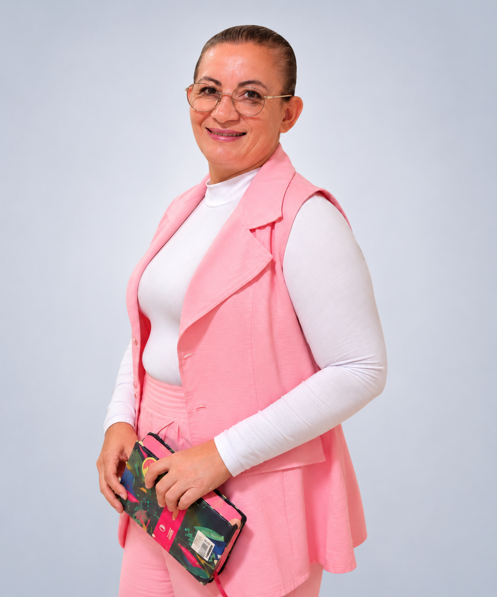

MINISTÉRIO PATRICIA SANTANA
Fé que fortalece.
Palavra que transforma.
O Ministério da Apóstola Patrícia Santana é pautado em
Libertação, Restauração e Batalha Espiritual em Alto Nível.Há 28 anos, a Apóstola Patrícia Santana iniciou sua caminhada com Jesus Cristo. Há 20 anos, dedica-se ao ministério de Libertação, com atuação em Cura Interior, Libertação Sexual e Batalha Espiritual.
Especialista em Batalha Espiritual de Alto Nível, ministra seminários presenciais e online, levando ensinamentos de fé, restauração e transformação de vidas.


ENSINO BÍBLICO
COM PROFUNDIDADE
Palavra que edifica,
esclarece e transforma.

LIBERTAÇÃO
E RESTAURAÇÃO
Vidas livres para um
novo tempo.
UMA TRAJETÓRIA DE FÉ
Chamada para
Chamada para
Transformar
Vidas.
◇
Para libertar, curar e restaurar.
MAIS QUE ENSINO, VIDAS TRANSFORMADAS CONHEÇA MAIS SOBRE SUA HISTÓRIA →
CURA INTERIOR
Quebra de ciclos e
restauração das emoções.

VIDAS ALCANÇADAS
PELO MINISTÉRIO
Pessoas impactadas
por uma nova caminhada.
SEMINÁRIOS
Conhecimento para fortalecer sua caminhada.


BATALHA ESPIRITUAL
Ensino para quem busca discernimento e profundidade.
Conteúdos preparados para uma caminhada de conhecimento, fortalecimento e propósito.
CONHECER OS SEMINÁRIOS